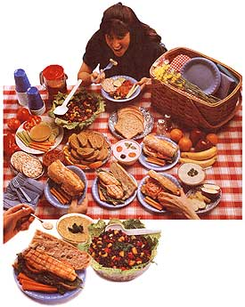
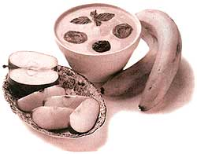

Hold the mayo and chips-picnics are just as scrumptious without 'em.
Pump up those biceps: coolerauling time is here again. Ah, it's the season of the movable feast, so while you're at it, grab the sunscreen and insect repellent. Whether you're picnicking at the beach, park, zoo, backyard, or bike trail, you've got to launch out prepared for any hunger attack that may strike.
When I speak of portable food, I'm not talking about when the ants carry off the blanket, but rather about your own carefully planned feast. Picnicking used to be so simple. We had a choice of ham, tuna, or egg salad on white bread-with lots of mayo. There was also the mandatory potato salad and coleslaw . . . and brownies for desert. But suddenly life has become complex with high-fat versus low-fat food choices, and the consuming question: "Is there life without mayonnaise?" In fact, the entire picnic atmosphere has become health-conscious. Remember witnessing throngs of people parking their oiled bodies on beach towels and rolling ov er every hour? Now "the perfect tan" conveys one of two messages:
1) sheer ignorance or 2) a death wish. When it comes to picnicking, my husband claims I take everything but the kitchen sink-which is why we rarely reach the lake before sundown. (However think of all the money I save on sunscreen.) Of course, no one complains when they're stuffing themselves every half hour, which is how frequently kids and husbands eat when away from home. The only catastrophe I've had was when we hiked 10 miles into a canyon only to discover I'd left lunch back at the car. Rule #
1: The best picnics are those that actually make it to the picnic site. Here are a few timesaving tips to get you out of the house at an early (or at least reasonable) hour:
At the first sign of warm weather, make up a picnic basket or bag with all the picnic necessities, including: bottle opener, knife, plastic ware, Ziplock bags, and so on. Replenish the basket as needed but don't unpack it until October.
Freeze an ample supply of freezer packs (or as I refer to them, "those frozen things") in a variety of sizes. Frozen lunch-box juice packs can also be used as frozen things. If there's no extra room in your freezer for long-term storage, keep packs in the picnic basket so they can be popped into freezer the night before the outing.
Get yourself a smaller cooler so you don't always have to lug the big cooler.
Prepare your food the day before the picnic. Don't make up the sandwiches ahead of time because they'll only get soggy. Instead, wrap up the fillings or store in plastic containers and have picnickers prepare their own sandwiches as needed.
Alternative Food Ideas
Snacks:Instead of high-fat snacks such as potato chips, bring flavored rice cakes, baked corn chips with homemade salsa, toasted Pita bread quarters with humus dip, or an assortment of fresh fruits and vegetables.Beverages: Bring flavored sparkling water, juice coolers, water with lemon slices, and iced herbal tea instead of sugar-filled soda pops. Sandwiches:
Using whole grain breads, make vegetable sandwiches sprinkled with a little freshly grated parmesan or low-fat cheese. (Grating cheese first allows you to use less.)
For meat lovers, poach or grill a chicken breast and then top with salad greens, tomato slices, and a little mustard. Try stuffing this into pita bread with humus and vegetables. Salads: Avoid using high-fat dressings and mayonnaise (which is the fastest way to take the health right out of a salad). If you must use them, add some non-fat yogurt and lemon juice, whisking it into the dressing. Make vinaigrette dressings by combining lemon juice, vinegar, garlic, Dijon mustard, herbs, spices, and a little olive oil.
Desserts: Take small containers of lowfat, flavored yogurt, fresh or dried fruit, graham crackers, and low-fat cookies. If you simply must have a cake, buy a plain angel food cake and a container of mashed berries for topping.
Bruschetta Rustica
Below are two recipes from Chef Massimo's Salatino's "Vivo" Restaurant, in Chicago: 1 loaf of Italian bread Preheat oven to 400°F. Slice bread and spread lightly with garlic oil (see page 78). Bake for approximately eight minutes, until lightly toasted, not hard.
FOR OLIVE PASTE TOPPING:
2 cups black olives (try Greek calamata)
2 garlic cloves
1 small bunch parsley
salt and freshly ground pepper to taste
a pinch of cayenne pepper
1/4 cup virgin olive oil
Take out pits from olives and chop with sharp knife; combine with garlic, parsley, salt, pepper, and cayenne. Chop coarsely, and then add just enough olive oil to mix.
FOR DICED TOMATO TOPPING:
6 plum tomatoes
2 garlic cloves
8 sprigs fresh basil
salt and freshly ground pepper to taste
cup olive oil
fresh basil leaves for garnish
Blanch tomatoes for two minutes in boiling water. Peel, dice, and mix with chopped basil, garlic, salt, pepper, and olive oil. Spread olive paste and tomato topping on bruschetta. Garnish with basil leaves. Serves four.
Marinated Bean Salad
For this recipe you can either prepare your own beans as described below or use canned beans.
FOR BEANS:
1/2 pound dried black or kidney beans (approximately 1 cup)
1 carrot, chopped in half
1 Spanish onion, chopped in quarters
1 stalk celery, chopped in half
2 bay leaves
1 teaspoon salt
Pre-soak beans overnight. Drain and rinse with cold water. Put beans in cooking pot, cover with cold water, and add rest of ingredients. Bring to boil, turn heat to low, and simmer for 45 to 50 minutes. Let beans cool in cooking water. Discard vegetables and bay leaves.
FOR SALAD:
Cooked beans (or 215-ounce cans, rinsed and drained)
1 small red or yellow onion, thinly sliced
1 small bunch Italian parsley, chopped
1 red bell pepper, diced
1 yellow bell pepper, diced
1 stalk celery, diced FOR SALAD DRESSING:
2 cloves garlic, minced
2 tablespoons wine vinegar
2 tablespoon olive oil
pinch salt and white pepper
pinch of cayenne pepper
Combine beans with other salad ingredients. Mix salad dressing ingredients and toss with salad. If possible, chill in refrigerator for a few hours or overnight to allow flavors flavors to blend. Toss before serving. Serves eight.
Sandwiches
CHICKEN SPINACH
1 grilled or poached* chicken breast, chilled and sliced
10 to 15 tender fresh arugula or spinach leaves, washed and dried
1 fresh tomato, sliced
1 small red onion, sliced thin
6 to 8 fresh basil leaves (optional)
red pepper spread or basil mayonnaise (see page 78)
Layer ingredients on bread. Spread on red pepper spread or basil mayonnaise and serve.
*To poach: In small frying pan with a lid, pour in just enough white wine, water, or chicken broth to cover chicken. Add a clove of mashed garlic and simmer covered until chicken is done in the center (15 to 20 minutes). Serves three.
ROASTED VEGETABLES
Vegetables taste great cooked on the grill. If you'll be grilling on picnic day, take along pre-washed and cut vegetables, bread, and garlic oil. Otherwise, plan to grill indoors the day before.
1 red pepper, seeded and quartered
8 slices eggplant*, cut into circles 1/4" thick
1 red onion, cut into circles 1/4" thick
1 zucchini, cut lengthwise into 1/4" slices
6 to 8 fresh basil leaves (optional)
3 slices provolone or smoked mozzarella cheese
3 fresh plum tomatoes, sliced
6 slices Italian bread or 1 baguette, sliced lengthwise
Garlic oil**
*Place eggplant in a colander in the sink. Sprinkle with a pinch of salt and let sit for 15 minutes.
**To prepare garlic-olive oil: mash three to four large cloves of garlic and put in a saucepan with 1/2 cup olive oil. Simmer a few minutes until garlic is soft. Season with pepper.
Brush vegetables with garlic oil. If grilling them under the broiler, place peppers (skin side up) and the other vegetables on a foil-lined cookie sheet or shallow pan. Broil approximately 4" from the heat for a few minutes per side, watching carefully so they don't burn. Vegetables should brown slightly but red peppers should be charred. Enclose red peppers in the foil, and after 15 minutes of'cooling, remove blackened pepper skins. Brush bread with garlic oil and toast under the broiler for a few seconds until light brown. Layer vegetables between toasted bread.
Roasted Red Pepper Spread
Try using this low-fat spread as a mayonnaise substitute. It's especially good on vegetable sandwiches or for tortilla chip dipping.
1 large red bell pepper, roasted
1 tablespoon sundried tomatoes (not packed in oil)
1 small clove garlic
1 green onion
2 tablespoons fresh cilantro leaves
3 ounces "lite" cream cheese or low fat yogurt cheese
1 teaspoon lemon juice
1 teaspoon ground cumin
1/8 teaspoon cayenne pepper
dash salt
To roast red peppers, cut them into quarters lengthwise, and remove seeds and stems. Arrange and flatten on aluminum foil (inside of pepper face down). Place in oven or under broiler until blackened. Fold foil into a tight package and leave for at least 10 minutes. Peel off blackened skin.
Put sundried tomatoes in f cup of boiling water, and let sit for at least five minutes. Drain and chop. In a blender, mince garlic, green onion, and cilantro. Add red pepper and sundried tomatoes. Blend until smooth.
Add yogurt or cream cheese and spices-blend thoroughly. Chill in plastic container until serving. (Spread will thicken as it cools.) Keeps for approximately one week; stir before using.
Basil Mayonnaise
This is for those who must have a little mayo on their sandwiches. It's very flavorful, so spread thinly.
1 small clove garlic, minced
1 egg yolk
1/2 cup fresh basil leaves
1 teaspoon Dijon mustard
1 tablespoon lemon juice
a dash cayenne pepper cup olive oil
1/ 4 cup canola or other vegetable oil
salt and freshly ground pepper to taste
Mix all ingredients together except oil. In a slow steady stream, pour oil into mixture, blending to make a thick mayonnaise.
Poppy Seed Biscotti
These low-fat cookies are twice baked, so they're nice and crisp. Cool thoroughly before storing in a tin or plastic container. They'll stay fresh for a month or so.
2 large eggs
2 large egg whites
1 tablespoon frozen orange juice concentrate
2 tablespoons grated orange rind (about two oranges)
1/2 teaspoon orange extract or vanilla
1/3 cup sugar
2 tablespoons honey
1/2 teaspoon baking soda
1/4 cup poppy seeds
2 3/4 cups sifted whole-wheat flour or unbleached white flower
1 teaspoon baking powder
Pre-heat oven to 325°F. Line a cookie sheet with parchment paper or use a nonstick baking sheet. Mix all ingredients up to, and including, poppy seeds until well blended. Sift together flour and baking powder, then mix into the wet ingredients. Spoon onto the cookie sheet, making two logs about 4" apart. Use a spatula to shape the logs so they're both even widths (not wider than 2"). Bake for 20 to 25 minutes until firm to the touch but not brown.
Remove from oven; reduce temperature to 300°F. Let logs cool for five minutes or so, then cut into 1/2"-thick slices. (Cut diagonally for a larger cookie.) Arrange the slices upright on the cookie sheet and bake again for 20 to 25 minutes until firm to the touch. Let cool. Serves 24.
|
 SUMMER PICNICKING Haul out those coolers?picnic time has arrived. Bring along tasty chicken- spinach sandwiches with basil mayonnaise and marinated bean salad. |
 SUMMER PICNICKING Don't forget to pack healthy snacks, such as yogurt and fresh fruit. |
|